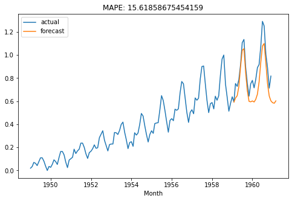
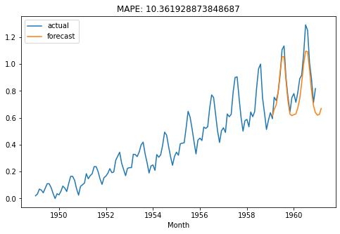
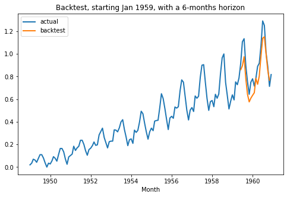
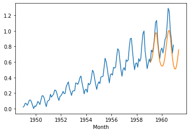
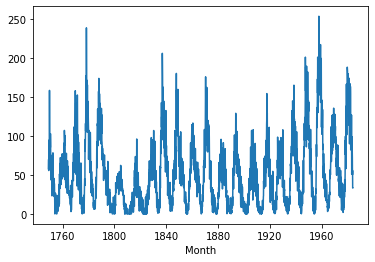
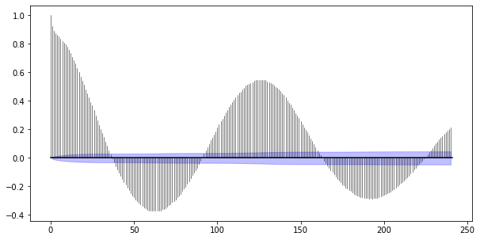
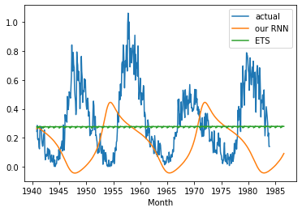

[1]:
%load_ext autoreload
%autoreload 2
%matplotlib inline
[2]:
import torch
import torch.nn as nn
import torch.optim as optim
import numpy as np
import pandas as pd
import shutil
from sklearn.preprocessing import MinMaxScaler
from tqdm.notebook import tqdm
from torch.utils.tensorboard import SummaryWriter
import matplotlib.pyplot as plt
from u8timeseries import TimeSeries, RNNModel, Transformer, ExponentialSmoothing
from u8timeseries.metrics import mape
from u8timeseries.utils import TimeSeriesDataset1D
from u8timeseries.models.statistics import check_seasonality, plot_acf
Some hyper-parameters:¶
[3]:
# Number of previous time stamps taken into account.
SEQ_LENGTH = 12
# Number of features in last hidden state
HIDDEN_SIZE = 25
# number of output time-steps to predict
OUTPUT_LEN = 1
# Number of stacked rnn layers.
NUM_LAYERS = 1
Air Passenger Example¶
[4]:
# Read data:
df = pd.read_csv('AirPassengers.csv', delimiter=",")
series = TimeSeries.from_dataframe(df, 'Month', '#Passengers')
# Create training and validation sets:
train, val = series.split_after(pd.Timestamp('19590101'))
# Normalize the time series (note: we avoid fitting the transformer on the validation set)
transformer = Transformer()
train_transformed = transformer.fit_transform(train)
val_transformed = transformer.transform(val)
series_transformed = transformer.transform(series)
Let’s train an LSTM neural net. For using vanilla RNN or GRU instead, replace 'LSTM' by 'RNN' or 'GRU', respectively.
[5]:
my_model = RNNModel('LSTM', OUTPUT_LEN, SEQ_LENGTH, HIDDEN_SIZE, NUM_LAYERS,
batch_size=16, n_epochs=400, optimizer_kwargs={'lr': 1e-3},
model_name='Air_RNN', log_tensorboard=True)
[6]:
my_model.fit(train_transformed, val_transformed, verbose=True) # 107
Training loss: 0.0068, validation loss: 0.0190
Look at predictions on the validation set¶
Use the “current” model:
[7]:
def eval_model(model):
pred_series = model.predict(n=26)
plt.figure(figsize=(8,5))
series_transformed.plot(label='actual')
pred_series.plot(label='forecast')
plt.title('MAPE: {}'.format(mape(pred_series.slice_intersect(val_transformed), val_transformed)))
plt.legend();
eval_model(my_model)

Use the best model obtained over training, according to validation loss:
[8]:
best_model = RNNModel.load_from_checkpoint(model_name='Air_RNN', best=True)
eval_model(best_model)
loading model_best_270.pth.tar

Backtesting¶
[9]:
from u8timeseries.backtesting import simulate_forecast_ar
my_model = RNNModel('RNN', OUTPUT_LEN, SEQ_LENGTH, HIDDEN_SIZE, NUM_LAYERS,
batch_size=32, n_epochs=200, optimizer_kwargs={'lr': 1e-3},
model_name='Air_RNN')
# Perform the actual backtest
backtest_series = simulate_forecast_ar(series_transformed, my_model, pd.Timestamp('19590101'), fcast_horizon_n=6)
..................
[10]:
plt.figure(figsize=(8,5))
series_transformed.plot(label='actual', lw=2)
backtest_series.plot(label='backtest', lw=2)
plt.legend()
plt.title('Backtest, starting Jan 1959, with a 6-months horizon')
[10]:
Text(0.5, 1.0, 'Backtest, starting Jan 1959, with a 6-months horizon')

[11]:
my_model_gru = RNNModel('GRU', OUTPUT_LEN*4, SEQ_LENGTH, HIDDEN_SIZE, NUM_LAYERS,
batch_size=64, n_epochs=1500, model_name='Air_GRU_out12', log_tensorboard=True)
[12]:
my_model_gru.fit(train_transformed, val_series=val_transformed, verbose=True)
Training loss: 0.0099, validation loss: 0.0892
Result of training
Test with horizon=28, and feeding predictions
[13]:
pred_series = my_model_gru.predict(n=28)
series_transformed.plot()
pred_series.plot()

Monthly sunspot¶
Let’s now try a more challenging time series; that of the monthly number of sunspots since 1749. First, we build the time series from the data, and check its periodicity.
[14]:
df2 = pd.read_csv('monthly-sunspots.csv', delimiter=",")
series_sunspot = TimeSeries.from_dataframe(df2, 'Month', 'Sunspots')
series_sunspot.plot()
check_seasonality(series_sunspot, max_lag=240)
/Users/julien/anaconda3/envs/u8ts-test1/lib/python3.8/site-packages/statsmodels/tsa/stattools.py:568: FutureWarning:
fft=True will become the default in a future version of statsmodels. To suppress this warning, explicitly set fft=False.
[14]:
(True, 125)

[15]:
plot_acf(series_sunspot, 125, max_lag=240) # ~11 years seasonality

[16]:
train_sp, val_sp = series_sunspot.split_after(pd.Timestamp('19401001'))
transformer_sunspot = Transformer()
train_sp_transformed = transformer_sunspot.fit_transform(train_sp)
val_sp_transformed = transformer_sunspot.transform(val_sp)
series_sp_transformed = transformer.transform(series_sunspot)
[21]:
SEQ_LENGTH = 125
HIDDEN_SIZE = 10
# OUTPUT_LEN = 50
OUTPUT_LEN = 10
# NUM_LAYERS = 3
NUM_LAYERS = 1
[25]:
my_model_sun = RNNModel('RNN', OUTPUT_LEN, SEQ_LENGTH, HIDDEN_SIZE, NUM_LAYERS,
batch_size=64, n_epochs=300, model_name='sun_GRU', nr_epochs_val_period=1,
optimizer_kwargs={'lr': 1e-3}, log_tensorboard=True)
my_model_sun.fit(train_sp_transformed, val_series=val_sp_transformed, verbose=True)
Training loss: 0.0153, validation loss: 0.0180
For the sake of comparison, let’s also fit an exponential smoothing model:
[26]:
my_model_ets = ExponentialSmoothing()
my_model_ets.fit(train_sp_transformed)
[27]:
# Compute the predictions with the two models (the RNN can be somewhat slow)
pred_series = my_model_sun.predict(550)
pred_series_ets = my_model_ets.predict(550)
[28]:
val_sp_transformed.plot(label='actual')
pred_series.plot(label='our RNN')
pred_series_ets.plot(label='ETS')
plt.legend()
[28]:
<matplotlib.legend.Legend at 0x12fc9eee0>

[ ]: